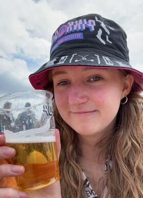

Over Ons
- 
Nienke Smit
-
Hey! Ik ben Nienke, student Communicatie en Multimedia Design aan de Hogeschool van Amsterdam. Naast dat ik het leuk vind om creatief bezig te zijn, speel ik in mijn vrije tijd ook graag gitaar of luister ik naar muziek. Maar ik leef niet alleen maar binnen, als ik naar buiten ga, ga ik het liefst aan de wandel of spreek ik af met vrienden. Bij concerten van Krezip kan je mij ook met enige regelmaat vinden. Festivals in de zomer zijn voor mij ook iets wat ik niet wil missen.

Devin Van de Ketterij
-
Hoi, ik ben Devin uit Alkmaar! Als ik niet achter een simracestuur zit of een game aan het ontdekken ben, struin ik het internet af voor interessante weetjes over geschiedenis. Mijn research doe ik vooral via YouTube-video's en af en toe een goed artikel. Het internet is een geweldige bron van inspiratie en laten we eerlijk zijn, ook een beetje verslavend.
Maar... het heeft ook een donkere kant, en daar gaat deze podcast over. Samen met Nienke en Sarah verkennen we de gevaren van het internet: van nepnieuws tot oplichterij, allemaal op een relaxte manier.

Sarah Pole
-
Hi, ik ben Sarah. Ik studeer aan de Hogeschool van Amsterdam en in het weekend doe ik een vooropleiding bij de HKU in Utrecht. In mijn vrije tijd doe ik niets liever dan schilderen of illustreren. Ik hou me op het internet vooral bezig met nieuwe game arts en animaties die aansluiten bij mijn interesses.
Ook animatie-YouTube-video's vind ik helemaal geweldig om te kijken en om van te leren. Naast mijn creatieve kant game ik ook veel en hou ik me bezig met populair internet-related nieuws.